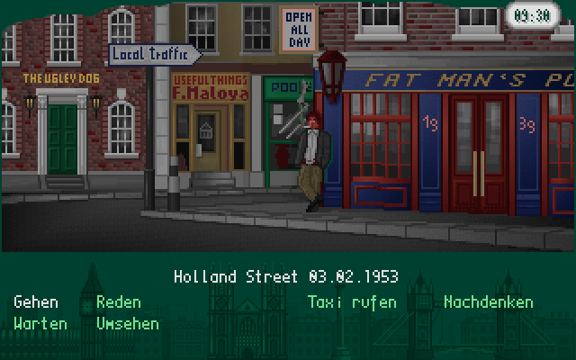
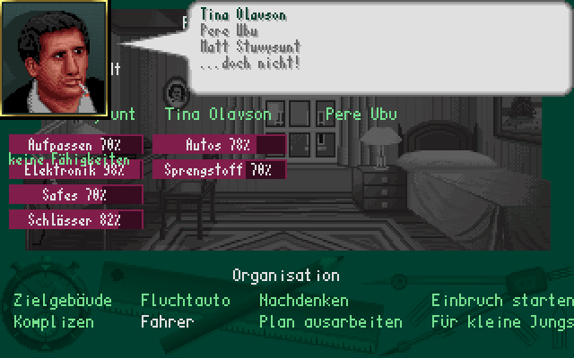
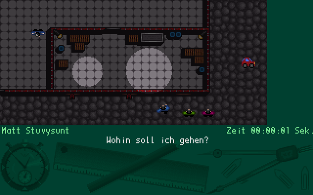
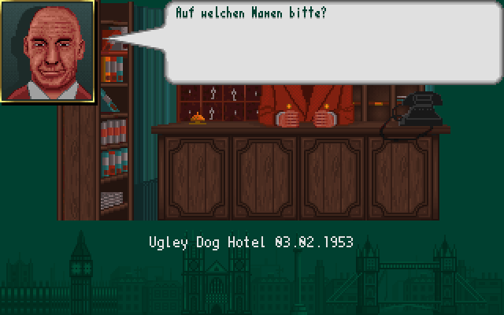

Matt Stuvysant kommt 1953 nach London, ohne Geld und mit einem Plan: der ganz große Coup. Der Clou! von neo Software ist die Einbruchssimulation von 1994, in der du jeden Schritt deiner Bande sekundengenau planst und dann zusiehst, ob dein Plan aufgeht.
Diese Version läuft auf heutigen Rechnern und direkt im Browser, mit dem Original-Spiel, der deutschen Sprachausgabe der CD-Version und der Profidisk.
Jetzt im Browser spielenSo läuft ein Bruch
-

London erkunden
Fahr mit dem Taxi durch die Stadt, sprich mit Hehlern, Wirten und alten Bekannten und halte die Ohren offen. Jede Begegnung kann ein Tipp für das nächste Ziel sein.
-

Die Bande zusammenstellen
Elektroniker, Safeknacker, Fahrer: Jeder Komplize hat Stärken, Schwächen und will seinen Anteil. Dazu kommen das passende Werkzeug und ein Fluchtauto.
-

Den Plan ausarbeiten
Im Grundriss legst du für jeden Komplizen fest, wohin er geht, wann er wartet und was er öffnet. Wachen drehen ihre Runden, Alarmanlagen warten nur auf einen Fehler.
-

Zuschlagen
Dann läuft der Plan ab, und du kannst nur noch zusehen. Geht alles gut, wartet die Beute beim Hehler. Wenn nicht, wartet Scotland Yard.
Was neu ist
- Planen per Mausklick. Rechtsklick in den Grundriss, und dein Komplize nimmt den schnellsten Weg dorthin.
- Zeitraffer und Countdown. Tab spult den Einbruch vor, nach einem Alarm siehst du, wie viel Zeit bis zur Polizei bleibt.
- Schwierigkeitsgrad. Leicht, normal wie im Original oder schwer.
- Einstellungen im Spiel. Lautstärken, Vollbild, Filter, Schwierigkeit, Zeitraffer und Gamepad direkt im Hauptmenü, gespeichert auch im Browser.
- Läuft im Browser. Spielstände und Einbruchspläne bleiben im Browser gespeichert.
- Jede Fenstergröße. Frei skalierbar mit festem Seitenverhältnis, Vollbild mit F11 oder Alt+Enter.
- Erkennt deine Version. Standard oder Profidisk, Diskette oder CD-ROM, Deutsch, Englisch, Französisch oder Spanisch.
- Gamepad. Steuerkreuz und Knöpfe, ein- und ausstecken im laufenden Spiel.
- Fehler behoben. Unter anderem beim Schließen des Fensters, in der Titelmusik und beim Speichern von Plänen.
- Getestet. Bei jeder Änderung spielt eine automatische Partie den Spielbeginn und die Planung durch.
Herunterladen
Alle Pakete enthalten die deutschen Spieldaten. Einfach entpacken und starten.
| System | Datei | Hinweis |
|---|---|---|
| Windows | DerClou-windows-x64.zip | DerClou.exe starten |
| Linux | DerClou-linux-x86_64.AppImage | ausführbar machen und starten |
| macOS | DerClou-macos.zip | beim ersten Start mit Rechtsklick öffnen |
| Browser | Direkt spielen | rund 80 MB Download beim ersten Start |
Ältere Versionen und Änderungen stehen auf der Release-Seite.